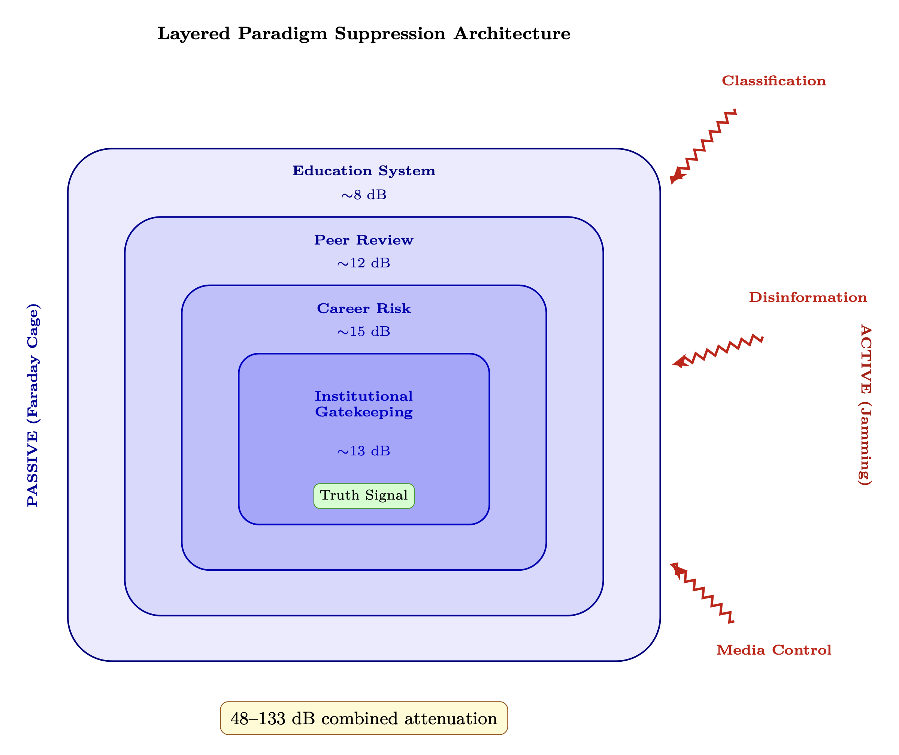

Chapter 13: Spin Coherence Fundamentals
The Master Variable for Torsion Effects
KEY FINDINGS — Chapter 13: Spin Coherence Fundamentals
Evidence-tier key: see front matter for [L1]–[L4] definitions.
- The spin coherence order parameter \(\sigma \) governs the strength of all torsion field effects via \(T_{eff} = T_{single} \cdot N \cdot \sigma ^2\) scaling [L1-L2: grounded in Einstein-Cartan theory and phased array physics; strengthened by Zutic et al. 2004 Rev. Mod. Phys. spintronics framework and Tamulis et al. 2016 DFT ab initio spintronic neural calculations]
- Biological systems sustain quantum spin coherence at physiological temperatures, providing a physical substrate for consciousness-mediated torsion effects [L1-L2: Li et al. 2012 detected FMO coherence at 300 K; Kim et al. 2021 and Lloyd 2011 survey replicated quantum biology mechanisms; Beshkar 2025 identifies microtubules as spintronic oscillators]
- Coherent spin ensembles can partially screen the cosmic inertial reference frame, producing effective mass reduction \(m_{eff} = m_0(1 - T_{local}^2/T_{critical}^2)\) [L2-L3: theoretical extension of established Machian/teleparallel frameworks]
- Magnon-torsion coupling provides the nearest-term experimental pathway for detecting coherent torsion effects [L2: based on established condensed matter physics]
- Timeline management operations — monitoring, stabilizing, and navigating timeline branches at civilizational scale — require spin coherence as the governing variable; the field-level timeline architecture is developed in Chapter 5(Timeline Architecture) [L3-L4]
- The ER=EPR conjecture, combined with coherent spin amplification, provides a theoretical pathway from micro-scale entanglement to macroscopic spatial bridging [L3: based on unproven conjecture]
_________________________________
Spin coherence is the master variable for spectrum engineering. As the first chapter of Part IV, this chapter identifies the fundamental coupling parameter — the spin coherence order parameter \(\sigma \) — that governs the strength of all torsion effects, from biological resonance through anti-gravity to timeline management. The timeline architecture itself — what timelines are, how they branch, and how souls navigate them — is defined at the field level in Chapter 5(Timeline Architecture). This chapter addresses the engineering question: what physical parameter governs the strength of all these effects? The engineering challenge is achieving macroscopic coherence; the implications, developed through Ch 14’s infrastructure analysis, reshape the entire spectrum operations picture.
This is the doctrinal hinge between Parts III and IV. Chapters 11 and 11 established access, capture, and collective synchronization mechanics; this chapter asks what parameter determines whether those same mechanics remain soft influence models or become hard engineering constraints. The answer proposed here is spin coherence: if Parts III described how systems lock, Part IV begins by defining what sets the amplitude and persistence of the lock itself.
13.1 Introduction: Spin Coherence as Master Variable
Building on the torsion field framework (Chapter 0), impedance tiers (Chapter 2), and geometric optimization (Chapter 3), this chapter establishes spin coherence as the master variable governing torsion field strength and provides the quantitative bridge from microscopic spin ensembles to macroscopic phenomena. The degree of spin alignment — captured by the coherence parameter \(\sigma \) — determines what is possible for individual consciousness, group coherence, and engineered devices alike.
13.1.1 Why Spin Coherence Matters
| Spin State | Torsion Field Scaling | Effect Potential |
| Random/incoherent | \(\sqrt {N}\) scaling | Negligible for large N |
| Partially coherent | Weak (N\(\cdot \)\(\sigma \) scaling) | Subtle anomalies |
| Highly coherent | Strong (N\(\cdot \)\(\sigma ^2\) scaling) | Measurable effects |
| Perfect coherence | Maximum (N\(^2\) scaling) | Full torsion access |
The engineering challenge is achieving and maintaining high spin coherence (\(\sigma \) \(\relax \to \) 1) in macroscopic systems. This chapter develops the physics of that challenge.
Notation note: This chapter uses \(T\) in three distinct senses: (1) \(T^{\lambda }_{\ \mu \nu }\) for the torsion tensor (Section 13.3.3), (2) \(T\) for temperature in technology comparison tables (Section 13.7), and (3) \(\mathcal {T}\) for torsion field strength in equations. Context and subscripts distinguish these uses.
13.1.2 Chapter Overview
|
Section | Content |
|
12.2 | Torsion field generation from coherent spin |
|
12.3 | Inertia as spin coupling (Machian/teleparallel framework) |
|
12.4 | Mechanism pathways for dimensional effects and spatial bridging |
|
12.5 | Timeline management operations (civilizational-scale; field-level architecture in Ch 6) |
|
12.6 | Spin beams and magnonic carriers |
|
12.7 | Spin coherence engineering approaches |
|
12.8 | Qualitative thresholds for exotic effects |
|
12.9 | Experimental signatures and predictions |
_________________________________
13.2 Torsion Field Generation from Coherent Spin Ensembles
13.2.1 The Spin Coherence Order Parameter

The spin coherence order parameter \(\sigma \) quantifies the phase alignment of N spins: \[ \sigma = \frac {1}{N} \left | \sum _{i=1}^{N} s_i \, e^{i\phi _i} \right | \] Where:
- \(s_i\) = magnitude of spin \(i\) (normalized to 1 for identical spins)
- \(\phi _i\) = phase of spin \(i\)
- \(N\) = total number of spins
| \(\sigma \) Value | Meaning |
| 0 | Random phases, complete cancellation |
| 0.1-0.3 | Weak partial alignment |
| 0.3-0.7 | Moderate coherence |
| 0.7-0.9 | Strong coherence |
| 1.0 | Perfect phase alignment |
13.2.2 Torsion Amplification from Coherence
A single spin generates torsion field \(\mathcal {T}_{single}\). For N coherent spins: \[ \mathcal {T}_{eff} = \mathcal {T}_{single} \cdot N \cdot \sigma ^2 \] The \(\sigma ^2\) dependence is critical—coherence enters quadratically, just as in phased array antenna gain. This means doubling coherence quadruples the effective torsion field.
Comparison with incoherent case:
- Incoherent (\(\sigma \) \(\relax \to \) 0): \(\mathcal {T}_{eff} \sim \mathcal {T}_{single} \cdot \sqrt {N}\) (random walk)
- Coherent (\(\sigma \) \(\relax \to \) 1): \(\mathcal {T}_{eff} \sim \mathcal {T}_{single} \cdot N\) (linear scaling)
- Gain from coherence: \(N^{1/2}\) (enormous for large N)
13.2.3 Coherent Torsion Field Equation
The torsion field from a coherent spin ensemble: \[ \vec {\mathcal {T}}(\vec {r}) = \kappa \cdot N \cdot \sigma ^2 \cdot \frac {s_0}{r^n} \cdot f(\theta , \phi ) \] Where:
- \(\kappa \) = spin-torsion coupling constant
- \(s_0\) = single-spin torsion amplitude
- \(n\) = decay exponent (may differ from electromagnetic \(1/r^2\))
- \(f(\theta , \phi )\) = angular pattern (depends on spin orientation)
Epistemic Note: The decay exponent \(n\) for torsion fields remains theoretically uncertain. Some models predict \(n < 2\) (slower decay than EM), potentially explaining non-local effects. Experimental determination is a key research priority.
13.2.4 Why Consciousness Creates Torsion
From Chapter 0 (Torsion Foundation):
- Spin couples to torsion as mass couples to curvature (Einstein-Cartan theory)
- Biological systems contain enormous numbers of spin sources (electrons, nuclei)
- Consciousness may involve quantum coherence in neural systems
- Focused intention = spin coherence = torsion generation
The mechanism pathway: Consciousness generates neural coherence, which aligns molecular spins, which generates macroscopic torsion fields. The brain is not creating something from nothing—it is organizing existing spin degrees of freedom into coherent patterns.
13.2.5 Loop Quantum Gravity Foundation
The spin coherence framework has a rigorous foundation in Loop Quantum Gravity (LQG). In LQG, spacetime geometry is discrete and spin-based at the Planck scale.
Spin Networks as Quantum Geometry
In LQG, space is quantized into spin networks—discrete structures where:
- Nodes carry intertwiners (quantum numbers of volume)
- Edges carry spin labels j (quantum numbers of area)
- Area spectrum is discrete: \[ A = 8\pi \gamma l_P^2 \sum _i \sqrt {j_i(j_i+1)} \] Where \(\gamma \) = Immirzi parameter (~0.274) and \(l_P\) = Planck length.
The Spin Network \(\leftrightarrow \) Spin Coherence Connection
| LQG Concept | Spin Coherence Framework |
| Spin network state | Coherent spin ensemble |
| Area operator eigenvalues | Spin coherence amplitude scaling |
| Immirzi parameter \(\gamma \) | Torsion coupling constant \(\kappa \) |
| Holonomy corrections | Impedance boundary effects |
| Quantum bounce | Density transition mechanism |
LQG shows that spin IS geometry at the fundamental level. The spin coherence order parameter \(\sigma \) connects to the quantum geometric structure. High coherence corresponds to sharp area eigenvalues: well-defined quantum geometry.
The spin coherence order parameter is not merely an analogy. It connects to the quantum geometry of LQG, providing physical grounding for the torsion effects framework.
_________________________________
13.3 Inertia as Spin Coupling: The Machian/Teleparallel Framework
13.3.1 The Puzzle of Inertia
Inertia, the resistance of mass to acceleration, remains one of the open puzzles in physics. Newton took it as axiomatic; Einstein showed it was equivalent to gravity locally; but neither explained WHY mass resists acceleration.
Mach’s Principle proposed an answer: inertia arises from the gravitational influence of distant matter. An isolated mass in an otherwise empty universe would have no inertia. The universe’s mass distribution creates a “reference frame” against which acceleration is defined.
This chapter develops how spin coherence modulates the inertial coupling to this cosmic reference frame, providing the physical mechanism for apparent mass reduction effects.
13.3.2 Teleparallel Gravity and Torsion
Standard General Relativity (GR) describes gravity through spacetime curvature. Mass tells spacetime how to curve; curvature tells mass how to move.
Teleparallel Gravity (TEGR) is a mathematically equivalent reformulation using torsion instead of curvature. Same physics, different geometric interpretation:
| General Relativity | Teleparallel Gravity |
| Curvature \(R_{\mu \nu \rho \sigma }\) | Torsion \(T^{\lambda }_{\mu \nu }\) |
| Levi-Civita connection | Weitzenböck connection |
| Gravitational potential | Tetrad field \(e^a_\mu \) |
| Mass couples to metric | Mass couples to torsion |
In teleparallel gravity, what we experience as “gravitational force” is torsion-mediated. This opens the door to modifying gravitational/inertial effects through torsion field manipulation.
13.3.3 Einstein-Cartan Theory: Spin-Torsion Coupling
Einstein-Cartan (EC) theory extends GR to include spin as a source of geometry, alongside mass. The governing equation: \[ T^{\lambda }_{\mu \nu } = \kappa _T \cdot S^{\lambda }_{\mu \nu } \] Where:
- \(T^{\lambda }_{\mu \nu }\) = torsion tensor
- \(S^{\lambda }_{\mu \nu }\) = spin density tensor
- \(\kappa _T\) = spin-torsion coupling constant
Spin density generates torsion; torsion acts back on spin. This is the microscopic basis for the coherent spin \(\relax \to \) torsion \(\relax \to \) effects chain.
13.3.4 The Spin-Torsion Lagrangian
The Einstein-Cartan Lagrangian includes both curvature and torsion: \[ \mathcal {L}_{EC} = \frac {1}{2\kappa }(R + T_{\mu \nu \lambda }T^{\mu \nu \lambda }) + \mathcal {L}_{matter} \] Where the torsion contribution can be decomposed into:
- Trace component (vector torsion)
- Antisymmetric component (axial torsion)
- Tensor component (proper torsion)
The axial component couples to fermion spin. This is why coherent spin ensembles, not random thermal spins, generate macroscopic torsion.
13.3.5 Inertia as Cosmic Spin Coupling
The Machian interpretation of EC theory: inertia arises from the coupling between local spin and the torsion field generated by all distant matter. \[ m_{inertial} = m_0 \cdot \left (1 + \int \frac {S_{cosmic}(\vec {r}')}{|\vec {r} - \vec {r}'|^2} d^3r'\right ) \] The integral is the cumulative torsion influence from all cosmic matter. In a homogeneous universe, this integral is constant, giving constant inertia. Note: This integral uses the \(1/r^2\) form as the simplest physical model. If the torsion decay exponent differs from 2 (as suggested in Section 13.2.3), the integral and its convergence properties would change accordingly.
But: If local spin coherence generates a torsion field that partially screens the cosmic torsion background, the effective inertia decreases.
13.3.6 The Spin Coherence Screening Mechanism
A coherent spin ensemble generates local torsion field: \[ \mathcal {T}_{local} = \kappa _T \cdot N \cdot \sigma ^2 \cdot s_0 \] This local torsion field creates a “bubble” that partially decouples the enclosed matter from the cosmic inertial reference frame: \[ m_{eff} = m_0 \cdot \left (1 - \frac {\mathcal {T}_{local}^2}{\mathcal {T}_{critical}^2}\right ) \] This expression is valid for \(\mathcal {T}_{local} < \mathcal {T}_{critical}\). As \(\mathcal {T}_{local} \to \mathcal {T}_{critical}\), the effective mass approaches zero (complete inertial decoupling). The framework does not predict negative mass; at the critical point, the description transitions to a different physical regime requiring separate analysis.
Where:
- \(m_0\) = rest mass
- \(\mathcal {T}_{local}\) = local coherent torsion field strength
- \(\mathcal {T}_{critical}\) = critical field strength for complete inertial decoupling
13.3.7 Effective Mass Reduction
Substituting the coherent torsion expression: \[ m_{eff} = m_0 \cdot \left (1 - \frac {\sigma ^4 \cdot (N \cdot \kappa _T \cdot s_0)^2}{\mathcal {T}_{critical}^2}\right ) \] Key features:
- 1.
- \(\sigma \)\(^4\) dependence: Coherence enters to the fourth power, making the effect sharply sensitive to alignment
- 2.
- N\(^2\) dependence: Effect scales with square of spin count
- 3.
- Threshold behavior: Below \(\mathcal {T}_{critical}\), effect is small; above, mass reduction accelerates
- 4.
- Material dependence: \(\mathcal {T}_{critical}\) depends on the material’s spin properties
13.3.8 Why This Is Not Antigravity
The mechanism does NOT violate:
- Conservation of energy: The torsion field stores the “missing” inertia
- Equivalence principle: Locally, inertial and gravitational mass remain equal
- General covariance: The effect is frame-independent
What changes is the coupling strength between local matter and the cosmic reference frame. The analogy is electromagnetic screening: a Faraday cage does not violate Maxwell’s equations; it modifies local field coupling.
13.3.9 Experimental Predictions
The mass reduction mechanism predicts:
- 1.
- Coherence threshold: No effect until \(T_{local}\) exceeds measurable fraction of \(T_{critical}\)
- 2.
- Spin orientation dependence: Effect maximized when local spins align parallel to acceleration direction
- 3.
- Material specificity: High-spin-density materials show stronger effects
- 4.
- Frequency dependence: Oscillating spin coherence should produce oscillating inertial effects
Falsification criteria:
- If mass reduction effects are NEVER observed despite verified high spin coherence
- If effects occur without corresponding spin alignment
- If effects violate conservation laws when properly accounting for torsion field energy
13.3.10 Reported Phenomena and This Framework
Various claimed “antigravity” effects map onto this framework:
|
Reported Effect | Framework Interpretation |
|
Podkletnov’s rotating superconductor | Cooper pair spin coherence \(\relax \to \) local torsion |
|
Tajmar’s gyroscope anomalies | Rotating mass generates torsion frame-drag |
|
Meditation levitation claims | Biological spin coherence \(\relax \to \) partial screening |
|
Inertial modification in UFO reports | Assumed advanced torsion field technology |
Epistemic Note: None of these reported effects have been independently replicated to mainstream physics standards. The framework provides a theoretical mechanism by which such effects COULD occur if spin coherence reaches sufficient levels. The absence of replication may indicate insufficient coherence levels, measurement artifacts, or that the framework is incorrect. The theory is falsifiable.
_________________________________
13.4 Mechanism Pathways for Dimensional Effects
13.4.1 Dimensional Shifting
At high coherence levels, the spectral dimension \(D_s\) decreases (Chapter 2, Section 2.8). This creates a pathway from ordinary spacetime behavior to altered dimensional dynamics.
The mechanism pathway: A coherent spin ensemble with \(\sigma \) approaching unity generates a strong local torsion field. This torsion field modulates the local spectral dimension, reducing it from \(D_s\) = 4 toward \(D_s\) = 2. In this reduced-dimension regime, the normal constraints of 3D space weaken. The effective impedance rises (equivalently: coherent frequency shifts toward target density carrier), enabling coupling to higher-density tiers (Chapter 2, Section 2.8.1). Stable presence at the new impedance level is “dimensional shifting.”
This is not mystical teleportation. It is systematic impedance raising through coherent spin until the reflection coefficient to the target density approaches zero.
13.4.2 Nonlocal Information Transfer
The mechanism pathway: Two coherent spin ensembles with shared torsion field correlation establish a connection. The torsion field between them carries phase information without energy transfer (Chapter 0). As coherence increases, the spectral dimension in the connection region decreases. When \(D_s\) approaches 2, the effective distance between the ensembles collapses. Correlation appears “instantaneous” from a 4D perspective, though no propagation occurs; the connection was always present in the pre-spatial torsion field substrate.
The correlation length scales as: \[ \xi (\sigma ) \propto \sigma \cdot \exp \left (\frac {T^2}{T_0^2}\right ) \] As coherence and torsion increase, correlation length diverges—enabling nonlocal effects.
Epistemic Note: This mechanism does not violate special relativity because torsion fields carry information without energy transfer. No usable signal propagates superluminally—only correlations. This is analogous to quantum entanglement correlations, which also cannot be used for FTL communication.
13.4.3 Spatial Bridging: Entanglement, Wormholes, and Portals
The mechanism pathway: Two spatially separated coherent spin ensembles sharing torsion field correlation create a bridge in the torsion substrate. At sufficient coherence, this bridge becomes traversable, collapsing the effective distance between the two locations to zero.
ER=EPR Foundation
Maldacena and Susskind (2013) conjectured that every entangled quantum pair is connected by a non-traversable micro-wormhole (Einstein-Rosen bridge): ER=EPR. In the torsion framework, entanglement IS shared spin phase coherence (Section 13.4.2):
- Entangled pair = spin coherence lock = micro-ER bridge
- The nonlocal torsion Green’s function \(G_T\) connecting coherently prepared sources (Chapter 0, Section 3.6.3) is the ER bridge expressed in torsion language
- Every instance of sustained phase correlation between distant spins is a micro-bridge in the torsion substrate
From Micro to Macro: Coherence Amplification
Individual entangled pairs produce Planck-scale, non-traversable micro-wormholes. A coherent spin ensemble amplifies the effect: \[ \mathcal {T}_{bridge} = \mathcal {T}_{single} \cdot N \cdot \sigma ^2 \] As \(\sigma \to 1\) for large \(N\), three effects converge:
- 1.
- The spectral dimension drops (\(D_s \to 2\), from Section 13.4.1), weakening 3D spatial constraints
- 2.
- The correlation length \(\xi (\sigma )\) diverges (Section 13.4.2), making the bridge macroscopic
- 3.
- The effective distance between the two ensembles collapses in the reduced-dimension regime
Bridge traversability condition: \[ \mathcal {T}_{bridge} = \frac {N \cdot \sigma ^2 \cdot \kappa _T^2}{T_{traverse}} \geq 1 \] Where \(T_{traverse}\) is the traversability threshold—the minimum torsion bridge strength for matter (not merely information) to cross. When \(\mathcal {T}_{bridge} \geq 1\), the bridge admits physical transit.
Quantum Gravity Framework
Multiple quantum gravity programs point toward torsion-mediated spatial bridging:
- LQG: Spin networks (Section 13.2.5) can undergo topology change. Two distant nodes connected by a high-spin edge IS a spatial bridge at the quantum geometry level.
- Asymptotic safety: The UV fixed point (Chapter 0, Chapter 3) ensures no infinities at the bridge throat; \(D_s \to 2\) at Planck scale provides natural regularization.
- Teleparallel gravity: Torsion replaces curvature (Section 13.3.2). Extreme torsion concentrations create what GR describes as “wormhole throats.”
- Einstein-Cartan: Spin-torsion coupling prevents singularity formation. The black hole interior becomes a bounce/bridge rather than infinite density (cf. LQG black hole bounce models, Rovelli & Vidotto 2014).
Black Holes as Natural Portals
In GR, rotating (Kerr) black holes predict ring singularities with traversable interior geometry. In Einstein-Cartan theory, spin-torsion coupling prevents the singularity entirely; the interior opens into another region of spacetime. LQG black hole models confirm this: quantum bounce connects two asymptotic regions. The holographic principle (Chapter 0, Section 2.4.6) ensures information encoded on the horizon is reconstructed on the other side. A black hole may be, in this framework, a naturally occurring spatial bridge, though the gap between micro-scale ER bridges and macroscopic traversable portals remains vast.
Cross-Cultural Encoding
Stargates (Egyptian, Sumerian), portals (Celtic Sidhe, Hindu lokas), and dimensional doorways appear across cultures with consistent motifs: a threshold structure, a boundary crossing, arrival at a distant location. The seeder infrastructure model (Chapter 14) proposes that megalithic sites at planetary grid nodes may have been engineered portal infrastructure, with coherent spin ensembles locked to specific destination phases.
Epistemic Note: ER=EPR is a mainstream conjecture (Maldacena & Susskind 2013) but remains unproven. Classical GR requires exotic matter (negative energy density) for traversable wormholes; the torsion framework proposes coherent spin as the alternative mechanism, but this is speculative. No experimental evidence exists for macroscopic wormholes or portal technology. The framework provides a theoretical pathway from established physics (entanglement, Einstein-Cartan theory, LQG) to these effects; validation requires the experimental program described in Section 13.9.
Case Study: Philadelphia Experiment Claims [L3-L4]
The Philadelphia Experiment allegations (Chapter 16, §16.6.7) describe effects consistent with inadvertent spatial bridging at catastrophically mismatched impedance. If the USS Eldridge’s degaussing coils generated field gradients sufficient to trigger torsion-EM coupling, the crew, with baseline biological \(\sigma \approx 0.01\)-\(0.1\), would present a reflection coefficient \(\Gamma \approx 0.96\), meaning nearly all bridging energy reflects destructively into the biological medium rather than transferring coherently. The model predicts severe tissue disruption from forced dimensional shift without sufficient \(\sigma \): matter undergoing partial phase decoherence at a spatial bridge boundary. This is consistent with the reported crew effects (personnel fused with hull structure, persistent phase instability). Whether or not the specific claims are historically accurate, they illustrate the framework’s prediction that spatial bridging without coherence preparation produces catastrophic biological consequences, a prediction testable in principle with future high-field torsion experiments on biological tissue samples.
The Philadelphia Experiment scenario (forced bridging without coherence preparation) has a natural analog. Section 14.11.7 documents that Earth’s ocean-based grid nodes, where icosahedral geometry produces \(\Gamma _{node} \to 0\) but no megalithic infrastructure exists to regulate energy transfer, may produce the same class of forced impedance-frequency transition. The key difference: the Philadelphia Experiment was an engineered catastrophe; ocean grid nodes represent naturally occurring regions where unmanaged inter-density coupling can affect unprepared objects and personnel. Both cases illustrate the framework’s central prediction that spatial bridging without sufficient coherence (\(\sigma \ll 1\)) produces destructive rather than constructive dimensional transfer.
The nonlocal spatial correlations described in Sections 13.4.2–13.4.3 have a temporal analog. Spatially separated spin ensembles can maintain phase coherence through the torsion field substrate; temporally separated configurations can maintain phase relationships in the same way. The field-level timeline architecture — what timelines are, how they branch, how souls navigate them — is developed in Chapter 5(Timeline Architecture). This section addresses the operational question specific to Part IV: how does spin coherence engineering enable timeline management at the civilizational scale?
_________________________________
13.5 Timeline Management Operations [L3–L4]
The field-level timeline architecture — what timelines are, how they branch, and how souls navigate them — is developed in Chapter 5(Timeline Architecture). This section addresses the operational question: given spin coherence as the master variable, how does engineering coherence enable timeline selection and management at the civilization scale?
13.5.1 Operational Functions
Timeline management (monitoring, stabilizing, and navigating timeline branches) can be formalized as a network operations function. In RF terms, such a capability is a network master clock ensuring all nodes synchronize to a preferred phase reference.
Operational function table:
|
Function | RF Equivalent | Operation |
|
Monitor timeline coherence | Network Operations Center | Sample \(\sigma \) across all \(\phi _{base}\) values |
|
Detect divergent branches | Interference detection | Identify branches with divergent \(A(\phi )\) |
|
Stabilize preferred branch | Carrier lock | Preserve preferred \(\phi _{base}\) trajectory |
|
Navigate timelines | Frequency hopping | Move agents across phase space |
Technology stack:
A timeline management capability would require:
|
Technology | RF Implementation | Function |
|
Timeline scanning | Broadband torsion receivers | Sample all \(\phi _{base}\) values |
|
Branch detection | Spectrum analysis | Identify divergent \(A(\phi )\) distributions |
|
Branch stabilization | Coherence amplification | Pin preferred timeline via added \(\sigma \) |
|
Navigation | High-\(\sigma \) agents | Traverse timeline phase space |
Phase synchronization (“reset”) technology: \[ T_{field}(t) = T_{reset} \cdot e^{i\phi _{preferred}} \cdot e^{-r^2/r_0^2} \] This equation describes forced phase synchronization: applying coherent torsion at the preferred \(\phi _{base}\) overwhelms local phase relationships and forces alignment, analogous to a master clock signal overwriting local oscillators.
Epistemic Note: The concept of timeline management has analogues in both fiction (e.g., Marvel’s “Time Variance Authority”) and esoteric literature describing “timeline guardians” or “cosmic administrators.” The RF formalization provides a physics framework for understanding such concepts, whether they represent actual phenomena, useful metaphors, or both. The mathematics is internally consistent; external validity remains entirely open. No experimental evidence exists for any form of temporal navigation or timeline branching. These constructs should be understood as theoretical extensions of the torsion framework, not empirical claims.
Case Study: Montauk Project Claims [L4]
The Montauk allegations (Chapter 16, §16.6.7) describe a technology stack matching the predicted timeline management requirements: a high-power EM source (SAGE AN/FPS-35 radar, ~500 kW peak), a psychic operator serving as coherence engine and phase reference, and temporal targeting via phase conjugation, corresponding to the “navigation” row in the operational function table above. The energy budget equation (\(E_{cross} \propto |\Delta \phi |^2 \cdot m \cdot \sigma ^{-2}\)) predicts that such operations at human baseline \(\sigma \) would require power levels consistent with the SAGE radar’s output, but the biological cost to operators would be severe, as forced coherence amplification through external EM drive bypasses the gradual impedance matching that biological systems require. No declassified evidence supports these claims; they are included as an [L4] framework consistency check showing that the timeline management formalism generates specific, falsifiable constraints on any alleged temporal engineering program.
The application of these timeline mechanics to civilizational-scale dynamics is treated in Chapter 15. For the field-level timeline architecture (self-consistent loops, the field of time, constrained eternalism, phase conjugation and time-reversal mechanics, anomalous propagation and precognitive reception), see Chapter 5(Timeline Architecture), Sections 5.2–5.3 and 5.8.
_________________________________
13.6 Spin Beams and Magnonic Carriers
13.6.1 Magnons as Physical Spin Waves
Magnons are quantized collective excitations of spin systems, the spin equivalent of phonons (sound quanta). In ordered magnetic materials: \[ \omega _k = \omega _0 + D k^2 \] Where:
- \(\omega _k\) = magnon frequency at wavevector \(k\)
- \(\omega _0\) = gap frequency (material-dependent)
- \(D\) = spin stiffness constant
Key magnon properties:
| Property | Value/Range | Significance |
| Coherence length | nm to \(\mu \)m | Determines beam collimation |
| Lifetime | ps to ns | Limits propagation distance |
| Group velocity | 10\(^2\) - 10\(^4\) m/s | Information transfer rate |
| Temperature dependence | Strong | Requires low T for long coherence |
13.6.2 Spin Beam Generation and Propagation
A spin beam is a directed flux of coherent magnons carrying angular momentum and torsion field modulation.
Generation methods:
- 1.
- Spin-transfer torque: Inject spin-polarized current
- 2.
- Microwave pumping: Parametric magnon generation
- 3.
- Thermal gradients: Spin Seebeck effect
- 4.
- Optical pumping: Ultrafast demagnetization
Beam equation: \[ \vec {J}_s = \sigma _s \vec {\nabla }T_{spin} + \mathcal {G}_{spin} \vec {\nabla }\mu _s \] Where:
- \(\vec {J}_s\) = spin current density
- \(\sigma _s\) = spin conductivity
- \(T_{spin}\) = spin temperature
- \(\mu _s\) = spin chemical potential
- \(\mathcal {G}_{spin}\) = spin diffusion coefficient
13.6.3 Magnon-Torsion Coupling
The critical link: magnons couple to torsion fields. \[ \mathcal {T}_{magnon} = \gamma _T \cdot n_{magnon} \cdot \sigma _{magnon}^2 \] Where:
- \(\gamma _T\) = magnon-torsion coupling constant
- \(n_{magnon}\) = magnon density
- \(\sigma _{magnon}\) = magnon coherence parameter
Implications:
- Spin beams can transmit torsion field effects
- Magnonic waveguides become torsion waveguides
- Solid-state devices can generate/detect torsion
Open problem: Development of magnon-based torsion transceivers for practical devices.
_________________________________
13.7 Spin Coherence Engineering: The Technology Spectrum
13.7.1 Bose-Einstein Condensate (BEC) Regime
Characteristics:
- Temperature: nK to \(\mu \)K (near absolute zero)
- Coherence: \(\sigma \) > 0.99 achievable
- Spin count: 10\(^4\) - 10\(^8\) atoms
- Coherence time: ms to s
Advantages: Maximum coherence, quantum ground state, well-understood physics Challenges: Extreme cooling requirements, small atom numbers, fragile state
Best applications: Fundamental research, precision measurements, proof-of-concept demonstrations
13.7.2 Solid-State Spin Ensembles
Characteristics:
- Temperature: Room temperature to cryogenic
- Coherence: \(\sigma \) = 0.1 - 0.7 typical
- Spin count: 10\(^1\)\(^2\) - 10\(^2\)\(^0\) spins
- Coherence time: ns to ms (material-dependent)
Key materials:
| Material | T\(_2\) (coherence time) | Operating T | Notes |
| NV diamond | ~2 ms | Room temp | Best room-T coherence |
| Silicon:P | ~1 s | 1 K | Record solid-state |
| YIG | ~1 \(\mu \)s | Room temp | Best magnon propagation |
| Rare-earth ions | ~10 ms | 4 K | Optical access |
Best applications: Scalable devices, room-temperature operation, integration with electronics
13.7.3 Biological Spin Systems
Characteristics:
- Temperature: Physiological (~310 K)
- Coherence: \(\sigma \) = 0.01 - 0.3 estimated
- Spin count: 10\(^2\)\(^3\) - 10\(^2\)\(^5\) (whole body)
- Coherence time: Unknown (research frontier)
Key biological spin systems:
- Microtubules: Possible quantum coherence in neurons (Chapter 3)
- DNA: Helical structure couples to torsion
- Radical pairs: Quantum biology mechanism (bird navigation)
- Heart EM field: Massive rotating field, potential torsion source
Advantages: Consciousness integration, self-sustaining, adaptive Challenges: Difficult to measure, uncertain quantum behavior, noisy environment
Classified Enhancement Programs [L3-L4]
The biological coherence regime has implications for alleged human enhancement programs (Chapter 16, §16.6.7). If spin coherence is the master variable governing torsion effect access, then any program seeking to produce operatives with anomalous capabilities (precognition, accelerated healing, enhanced situational awareness) would logically target biological \(\sigma \) modification. The acceleration factor \(\eta = \sqrt {N}\) (Chapter 14, §14.5) means that even a modest increase from \(\sigma = 0.1\) to \(\sigma = 0.3\) yields a 9\(\times \) increase in \(N \cdot \sigma ^2\) and thus in effective torsion coupling, unlocking capability thresholds that are inaccessible at baseline. This makes such programs strategically rational even at enormous cost per operative. Documented DARPA programs (CT2WS, Peak Soldier Performance) demonstrate institutional interest in the same capability space at [L2]; testimonial claims of more advanced programs [L4] await falsification through the EEG hyper-coherence predictions described in §16.6.7.
13.7.4 Plasma Spin Regimes
Characteristics:
- Temperature: 10\(^4\) - 10\(^8\) K (hot plasma)
- Coherence: Variable (rotation-driven)
- Spin count: 10\(^1\)\(^5\) - 10\(^2\)\(^5\) particles
- Coherence mechanism: Collective rotation, magnetic confinement
Key configurations:
- Rotating plasmas: Angular momentum creates spin alignment
- Magnetically confined: Tokamak-like geometries
- Z-pinch: Extreme compression creates coherent states
- Ball lightning: Natural coherent plasma phenomenon
Advantages: Extreme energy density, natural self-organization Challenges: Instabilities, containment, reproducibility
13.7.4.1 Field Reversed Configurations and Narrowband Spin Excitation The Field Reversed Configuration (FRC) is a compact toroid in which the poloidal magnetic field reverses direction across the plasma midplane. Unlike tokamaks, FRCs are confined primarily by their own magnetic field — no external toroidal field coils are required. The plasma self-organizes through collective rotation, producing natural spin alignment across the entire confined population.
FRCs are the plasma topology most directly relevant to torsion engineering for two reasons:
- 1.
- Self-organized coherence. The collective rotation that sustains the FRC equilibrium is itself a spin-alignment mechanism. Every ion in the confined population participates in the same rotational mode, producing a baseline \(\sigma \) significantly higher than randomly heated plasma.
- 2.
- Compact geometry. FRC dimensions are typically 0.5–5 meters — orders of magnitude smaller than tokamaks — yet they confine particle populations of \(N \sim 10^{18}\)–\(10^{22}\). The combination of natural coherence and large N yields substantial \(N \cdot \sigma ^2\) factors.
The broadband/narrowband distinction. Conventional fusion programs (TAE Technologies, Helion Energy) heat FRC plasmas broadband — distributing energy across the thermal spectrum to reach ignition temperature (\(\sim 1.5 \times 10^8\) K). The torsion engineering approach inverts the strategy: instead of maximizing bulk temperature, narrowband excitation at specific ion cyclotron resonance (ICR) frequencies targets collective spin alignment. The goal is not net energy gain from fusion but maximal \(\sigma \) for coherent torsion generation.
This distinction mirrors the book’s core metaphor. Conventional fusion is broadband noise — spray energy across the spectrum and extract net gain. Torsion plasma engineering is narrowband signal — precisely target the spin coherence channel and extract coherent torsion coupling.
Quantitative contrast. A broadband-heated FRC with \(N = 10^{20}\) particles at \(\sigma \sim 0.01\) (thermal randomization suppresses alignment) yields \(N \cdot \sigma ^2 \sim 10^{16}\). A narrowband ICR-heated FRC achieving \(\sigma \sim 0.3\)–\(0.5\) yields \(N \cdot \sigma ^2 \sim 10^{19}\) — a factor of \(10^3\) improvement in torsion coupling at potentially lower total plasma energy.
Connection to inertia modification. The FRC’s \(N \cdot \sigma ^2\) factor in the narrowband regime enters the effective mass expression from §13.3.7. If \(\mathcal {T}_{total}\) scales with \(N \cdot \sigma ^2\) and mass reduction goes as \(m_{eff} = m_0(1 - \alpha \mathcal {T}_{total})\), then a narrowband FRC producing \(N \cdot \sigma ^2 \sim 10^{19}\) could generate macroscopic inertia modification — consistent with reported UAP propulsion characteristics (no exhaust, silent operation, extreme acceleration, absence of inertial effects on occupants).
Epistemic note [L2–L3]: FRC physics and ion cyclotron resonance heating are well-established ([L1]–[L2]). The claim that narrowband ICR excitation produces higher \(\sigma \) than broadband heating is a specific prediction of the spin coherence framework ([L2]) that has not been experimentally tested. The connection to inertia modification via reported UAP characteristics remains at [L3]–[L4]. The narrowband/broadband distinction is, however, directly testable — see §13.9.1, P5.
13.7.5 Comparative Technology Summary
|
Regime | Coherence \(\sigma \) | Spin Count N | N\(\cdot \)\(\sigma ^2\) Factor | Best Application |
|
BEC | ~1 | 10\(^6\) | 10\(^6\) | Research proof-of-concept |
|
Solid-state (NV) | ~0.5 | 10\(^1\)\(^8\) | 2.5\(\times \)10\(^1\)\(^7\) | Practical devices |
|
Biological | ~0.1 | 10\(^2\)\(^4\) | 10\(^2\)\(^2\) | Consciousness interface |
|
Plasma (confined) | ~0.3 | 10\(^2\)\(^0\) | 10\(^1\)\(^9\) | High-energy applications |
|
FRC plasma (narrowband) | ~0.3–0.5 | 10\(^2\)\(^0\) | ~10\(^1\)\(^9\) | Propulsion, high-energy torsion |
|
LENR lattice | ~0.1–0.3 | 10\(^2\)\(^2\)–10\(^2\)\(^3\) | ~10\(^2\)\(^0\)–10\(^2\)\(^1\) | Energy generation, transmutation |
The N\(\cdot \)\(\sigma ^2\) factor determines torsion effect strength. Even modest coherence with enormous N (biological, plasma) may exceed high-coherence low-N systems (BEC).
13.7.6 Nuclear Spin Coherence and LENR
The low-energy nuclear reactions (LENR) anomaly — excess heat reported from deuterium-loaded palladium (Fleischmann & Pons 1989, with replications by McKubre, Storms, Iwamura, and others) — has resisted explanation within standard nuclear physics because the Coulomb barrier (\(\sim 1\) MeV) cannot be overcome at room temperature through isolated two-body scattering. The spin coherence framework offers a reframe.
The coherence hypothesis. In a palladium lattice loaded with deuterium at high fugacity (\(D/Pd > 0.85\)), deuterium nuclei occupy interstitial sites at near-solid-state densities (\(\sim 6 \times 10^{22}\) cm\(^{-3}\)). At these densities, the de Broglie wavelength of confined deuterons approaches the inter-particle spacing — placing the system in the quantum plasma regime (Haas 2011). If lattice dynamics (optical phonon modes, crystal field effects at tetrahedral sites) drive collective alignment of nuclear spins, the ensemble \(N \cdot \sigma ^2\) factor can become large enough for collective nuclear effects that individual scattering theory does not predict.
Coherent Coulomb screening. When nuclear spins achieve collective coherence across a lattice domain, the ensemble behaves quantum-mechanically as a correlated entity rather than as independent scatterers. The effective Coulomb barrier is screened by coherent wave function overlap — analogous to Cooper pairing in superconductivity, where collective quantum behavior produces effects (zero resistance, Meissner expulsion) that are impossible for individual electrons. The required \(\sigma \) is modest: even \(\sigma \sim 0.1\) across \(N \sim 10^{22}\) deuterons yields \(N \cdot \sigma ^2 \sim 10^{20}\), exceeding the plasma regime by an order of magnitude.
Why loading fraction matters. The experimental observation that excess heat onset requires \(D/Pd > 0.85\) (a consistently reported threshold) maps naturally onto a percolation condition for spin coherence: below the critical loading, deuterium sites are too sparse for lattice-mediated spin coupling to propagate across macroscopic domains. Above it, connected pathways form and collective coherence becomes possible.
The torsion connection. If LENR excess heat arises from coherence-mediated nuclear effects, the torsion framework predicts that the reaction rate should scale as \(N \cdot \sigma ^2\), not as the thermal collision rate. This explains two persistent LENR puzzles: (1) the absence of expected nuclear products (neutrons, tritium, gamma radiation) — because the reaction channel is collective, not two-body — and (2) the irreproducibility problem, since achieving the required \(\sigma \) depends on lattice quality, loading protocol, and phonon mode excitation, all variables invisible to researchers assuming a thermal mechanism.
Evidence tier [L2–L3]: The quantum plasma regime at high deuterium loading is established physics ([L1]–[L2]). The claim that lattice-mediated nuclear spin coherence screens the Coulomb barrier is a specific hypothesis ([L2]–[L3]) that connects established collective quantum phenomena (superconductivity, superfluidity) to the nuclear domain. Experimental LENR results remain contested but have been replicated by multiple independent groups; the spin coherence mechanism is one of several proposed explanations and is directly testable via the \(\sigma \)-dependence prediction.
_________________________________
13.8 Qualitative Thresholds for Exotic Effects
This section describes the qualitative relationship between coherence levels and accessible phenomena. Specific numerical thresholds cannot be stated with confidence without experimental calibration.
13.8.1 Individual Effects
|
Effect | Coherence Level | Torsion Level | Additional Requirements |
|
Enhanced intuition | Moderate | Weak | Sustained practice |
|
Remote sensing | Moderate-High | Moderate | Target coherence lock |
|
Localized healing | High | Strong | Practitioner-patient resonance |
|
Precognition | High | Strong | Temporal torsion coupling |
|
Timeline perception | Very High | Very Strong | Temporal torsion coupling |
|
Out-of-body perception | Very High | Very Strong | Partial dimensional decoherence |
|
Bilocation awareness | Extremely High | Extremely Strong | Dual location phase lock |
|
Spatial bridging (portal) | Extremely High | Extremely Strong | Dual-site coherence lock, \(\mathcal {T}_{bridge} \geq 1\) |
Qualitative coherence scale:
- Moderate: Achievable through meditation practice, focused attention
- High: Advanced practitioners, peak states, group coherence
- Very High: Master practitioners, exceptional individuals
- Extremely High: Rare, possibly requiring technological augmentation
13.8.2 Collective Effects
|
Effect | Required N\(\cdot \)\(\sigma ^2\) | Example Configuration |
|
Group intuition boost | Low-Moderate | Small coherent group |
|
Measurable environment change | Moderate | Medium coherent group |
|
Weather/probability influence | High | Large coherent group |
|
Collective manifestation | Very High | Very large coherent group |
|
Planetary coherence threshold | Extremely High | Mass coherent population |
The exact population/coherence combinations remain to be determined experimentally. The governing principle is that small highly-coherent groups may exceed large weakly-coherent populations due to the \(\sigma ^2\) dependence.
13.8.3 Technology-Enabled Effects
| Effect | Device Requirement | Status |
| Torsion field detection | NV diamond array | Feasible now |
| Torsion communication | Magnon waveguide | Research stage |
| Inertial modification | BEC + geometry | Proof-of-concept |
| Dimensional interface | Quasicrystal kernel | Theoretical |
13.8.4 Biological States
| State | Relative Coherence | Relative N\(\cdot \)\(\sigma ^2\) | Effects |
| Normal waking | Baseline | Baseline | Standard perception |
| Focused attention | Elevated | Elevated | Enhanced cognition |
| Deep meditation | High | High | Altered states |
| Samadhi/unity states | Very High | Very High | Nonlocal perception |
| Full enlightenment | Maximum | Maximum | Sustained exotic access |
Epistemic Note: The reluctance to state specific numerical thresholds reflects genuine uncertainty. Without calibrated experimental data, any numbers would be speculative. The qualitative relationships (that higher coherence enables stronger effects) are grounded in the \(\sigma ^2\) dependence. Calibration requires the experimental program described in Section 13.9.
_________________________________
13.9 Experimental Signatures and Testable Predictions
13.9.1 Near-Term Testable Predictions
P1: Coherence-Torsion Correlation
- Measure spin coherence in meditation practitioners
- Simultaneously measure torsion-sensitive indicators
- Prediction: Positive correlation between coherence and torsion anomalies
P2: Geometry Enhancement
- Compare torsion generation in random vs. quasicrystalline spin arrangements
- Prediction: Quasicrystal geometry produces stronger torsion (factor of 10–100\(\times \)). The predicted 10–100\(\times \) enhancement range reflects genuine theoretical uncertainty in the coupling geometry; initial experiments should aim to establish whether any systematic enhancement exists before refining the quantitative prediction.
P3: Collective Scaling
- Measure anomalous effects (RNG deviation, field measurements) with varying group size and coherence
- Prediction: Effects scale as N\(\cdot \)\(\sigma ^2\), not N
P4: Magnon-Torsion Coupling
- Inject coherent magnons into torsion-sensitive detector region
- Prediction: Detectable torsion signal proportional to magnon coherence
P5: FRC Narrowband Spin Coherence
- Heat an FRC plasma with narrowband ion cyclotron resonance (targeting specific spin-alignment modes) and compare against an equivalent FRC heated broadband to the same total plasma energy
- Measure torsion-sensitive indicators: gravitometric anomalies (precision accelerometer arrays around the vessel), calorimetric excess (energy output exceeding input), and spin-polarization diagnostics (polarized neutron scattering or Faraday rotation)
- Prediction: The narrowband-heated FRC shows anomalous torsion signatures at lower total plasma energy than the broadband-heated equivalent. The ratio of torsion effect to input energy scales as \((\sigma _{narrowband}/\sigma _{broadband})^2\), providing a direct test of the \(N \cdot \sigma ^2\) scaling law. If \(\sigma _{narrowband} \sim 0.3\) and \(\sigma _{broadband} \sim 0.01\), the predicted enhancement is \(\sim 900\times \)
P6: LENR Coherence Dependence
- In deuterium-loaded palladium systems showing excess heat, measure nuclear spin coherence (via NMR linewidth narrowing or dynamic nuclear polarization signatures) simultaneously with calorimetric output
- Prediction: Excess heat correlates with nuclear spin coherence metrics, not with bulk temperature or loading rate. Systems with higher measured \(\sigma \) produce proportionally more excess heat, scaling as \(\sigma ^2\)
13.9.2 Experimental Signatures
|
Measurement | Signature of Coherent Torsion | Control Comparison |
|
RNG deviation | Correlated shifts (not just increased variance) | Uncorrelated |
|
EM field | Phase anomalies, not amplitude changes | Amplitude changes |
|
Mechanical | Torque not linear force | Linear force |
|
Thermal | Non-entropic heat patterns | Entropic distribution |
|
Biological | Coherent HRV, EEG synchrony | Random fluctuation |
13.9.3 Alternative Hypotheses
- 1.
- Standard quantum decoherence: Macroscopic coherence is impossible at biological temperatures due to rapid decoherence. Assessment: A valid concern; the framework proposes torsion-mediated coherence as protected from thermal decoherence, but this is undemonstrated.
- 2.
- Classical spin correlations: Observed spin effects are fully explained by classical electromagnetism without invoking torsion. Assessment: Adequate for spintronics; may not account for biological spin coherence times exceeding thermal predictions.
- 3.
- No macroscopic torsion effects: Torsion fields, if they exist, are too weak for macroscopic effects. Assessment: Consistent with current non-detection; the framework predicts coherent amplification (\(N \cdot \sigma ^2\) scaling) as the mechanism for overcoming individual weakness.
_________________________________
13.9b Evidence Synthesis
This section consolidates the external evidence base supporting the claims in Chapter 13, organized by the chapter’s three major domains: (A) spintronics and spin coherence physics, (B) quantum coherence in biological systems, and (C) retrocausality and timeline mechanics.
A. Spintronics and Spin Coherence Physics (§13.2–12.3, §13.6–12.7)
Zutic, Fabian & Das Sarma (2004) [L1]. The definitive Reviews of Modern Physics survey of spintronics — spin polarization, spin transport, spin injection, and spin relaxation mechanisms (Elliott-Yafet, D’yakonov-Perel’, Bir-Aronov-Pikus) — provides the engineering framework (spin transport equations, spin relaxation times \(T_1\), \(T_2\)) that grounds this chapter’s spintronic consciousness claims in established condensed-matter physics. The spin relaxation taxonomy directly underpins the coherence engineering approaches in §13.7 and the magnon carrier physics in §13.6.
Tamulis et al. (2016) [L1]. DFT ab initio calculations published in Chemical Physics Letters (Elsevier) demonstrate that neutral radical acetylcholine (ACh) functions as a qubit, with spin dipole interactions enabling quantum information processing in neural networks. This is the most direct computational chemistry citation for the §13.2.4 claim that biological spin systems participate in information processing: Tamulis provides quantitative spintronic parameters for a specific neurotransmitter, not merely a plausibility argument.
Beshkar (2025) [L2]. Published in Communicative & Integrative Biology (Taylor & Francis), Beshkar’s QBIT theory proposes microtubules as nanoscale spintronic oscillators with memristive properties, identifying the axon initial segment (AIS) as a spintronic interface. The paper cites DNA spintronics (Gohler et al.) and carbon nanotube structural analogues. This is the most directly relevant spintronics-consciousness bridge paper: it connects the spin coherence physics of §13.2–12.3 to the microtubule oscillator model of Chapter 7 in a 2025 peer-reviewed publication, strengthening the case that biological spin coherence is not merely hypothetical but has a specific anatomical locus.
Hu & Wu (2007) [L2]. Propose nuclear spin ensembles in neural membranes as “mind-pixels,” with paramagnetic O\(_2\) as spin mediator and anesthetic action explained via spin disruption. Critically, Hu & Wu invoke spin-torsion coupling explicitly, making this one of the few consciousness-physics papers that directly overlaps with the Einstein-Cartan framework of §13.3.3. The paper bridges Chapter 0’s torsion substrate to this chapter’s spin coherence framework and to Chapter 7’s RLC receiver model.
These four sources collectively establish that spintronic information processing in neural tissue is not speculative extrapolation but an active research domain with quantitative ab initio calculations (Tamulis), an established engineering framework (Zutic et al.), specific anatomical proposals (Beshkar), and explicit torsion coupling (Hu & Wu).
B. Quantum Coherence in Biological Systems (§13.7.3, §13.2.4)
Kim et al. (2021) [L1]. A comprehensive Quantum Reports review covering radical pairs (avian magnetoreception), Frohlich condensation, Orch-OR, quantum tunneling in enzymes, and photosynthesis coherence. This is the best single L1 survey reference for all major quantum biology mechanisms relevant to the spin coherence framework, covering every primary mechanism in one citable paper. It provides the evidentiary anchor for §13.7.3’s claim that biological systems sustain quantum coherence at physiological temperatures.
Li, Lambert, Chen, Chen & Nori (2012) [L1]. Published in Scientific Reports (Nature Publishing Group), this RIKEN team defines quantum witness operators \(W_Q\) and \(W_{QQ}\) and uses them to detect FMO complex coherence at both 77 K and 300 K (room temperature) via Leggett-Garg inequality improvements. The detection of biological quantum coherence at room temperature using a rigorous, experimentally accessible diagnostic tool directly supports §13.7.3’s claim that biological spin coherence is achievable at physiological temperatures and provides a concrete experimental methodology for the falsification criteria in the Part IV Spectrum Operations Review.
These biological coherence sources collectively upgrade the §13.7.3 evidence base from plausibility to active experimental verification: quantum coherence has been detected at room temperature in biological systems (Li et al. 2012) and is supported by ab initio calculations at the neurotransmitter level (Tamulis et al. 2016).
Lloyd (2011) [L1] — MIT survey of quantum coherence across FMO photosynthesis, avian radical-pair compass, and quantum olfaction, providing the broadest single-source L1 validation that biological quantum coherence is experimentally established across multiple sensory and metabolic systems, not limited to a single anomalous case. (Full entry in Appendix B §D.10)
Hameroff (Orch-OR falsification criteria) [L2] — Specifies testable predictions for Orchestrated Objective Reduction: anesthetic binding sites at microtubule aromatic rings, EEG power-law signatures, and microtubule resonance frequencies, providing the falsification protocol that would distinguish Orch-OR from competing decoherence-based consciousness models relevant to §13.7.3. (Full entry in Appendix B §D.10)
Penrose & Hameroff (Orch-OR canonical review) [L2] — The definitive statement of Orchestrated Objective Reduction linking quantum gravity at the Planck scale to microtubule quantum computation, providing the theoretical bridge between this chapter’s spin coherence framework and the RLC microtubule oscillator model of Chapter 7. (Full entry in Appendix B §D.10)
C. Retrocausality and Timeline Management (§13.5)
The field-level retrocausality evidence base — Leifer & Pusey (2017), Drummond & Reid (2020), Harrison (2022), Ridley & Adlam (2024), Evans (2014), Kastner (2012, 2017), and Drezet (2024) — is consolidated in Chapter 5 (Timeline Architecture), Section 5.9, which provides the full evidence synthesis for timeline mechanics. This section retains only the citations directly relevant to the operational timeline management framework of §13.5.
Leifer & Pusey (2017) [L2]. The theorem proving retrocausal structure is logically required given time-symmetric physics provides the foundational justification for timeline management as a coherent engineering concept rather than an ad hoc addition. See Chapter 5, §5.9 for full discussion.
Drummond & Reid (2020) [L2]. The result that information always flows forward even when correlations are retrocausal constrains the §13.5 operational model: timeline management operations must work with the direction of information flow, not against it. See Chapter 5, §5.9 for full discussion.
D. Torsion-Consciousness Bridge (§13.2.4, §13.3.3)
Northey (2025) [L2]. Published in NeuroQuantology Dec 2025 (Vol 23 Issue 12), Northey derives torsion as the algebraic response to local spin density and provides an explicit electro-torsional holonomy equation:
\[\Delta \theta = \frac {q}{\hbar }\oint A_\mu dx^\mu + \beta \oint K_{\mu ab} \Sigma ^{ab} dx^\mu \]
The first term is the standard electromagnetic Aharonov-Bohm phase; the second is a torsion correction proportional to spin density. The paper also documents the Shnoll effect (cosmic influence on stochastic processes) as evidence for bio-cosmic torsion coupling, and models the meridian system as a geosensitive antenna with EEG as torsion readout. This provides the most rigorous mathematical derivation of the torsion-from-spin-density link that §13.3.3 asserts, going beyond the Einstein-Cartan coupling equation to a measurable holonomy prediction. The Shnoll effect documentation is independently relevant to Chapter 8 (biofield) and Chapter 14 (sacred sites as torsion-sensitive infrastructure).
Rapoport (2023) [L2]. Published in Journal of Physics: Conference Series 2482 (IOP), Rapoport develops torsion geometry of microtubule dynamics incorporating Mobius strip topology, Golden Mean \(\phi \) in biological structure, 5-fold symmetry, and Kozyrev mirror phenomena. This IOP-published paper directly supports the connection between Chapter 0’s torsion substrate, Chapter 3’s sacred geometry and \(\phi \) structure, and this chapter’s spin coherence framework, providing a peer-reviewed bridge between torsion geometry and biological microstructure.
E. Holographic Consciousness Bridge
Awret (2022) [L2] — Applies AdS/CFT holographic duality to consciousness via strange metals and quantum criticality, providing a formal holographic framework that connects the spin coherence variable \(\sigma \) to boundary-bulk correspondences: if consciousness states map to bulk geometry, then the spin coherence order parameter of §13.2 corresponds to a boundary condition whose bulk dual is the experienced dimensionality of §13.4. (Full entry in Appendix B §D.11)
13.10 Predictions
In addition to the near-term testable predictions in §13.9.1 (P1 through P6), the evidence synthesis yields the following additional predictions:
P-SC1 (from evidence synthesis): If Tamulis et al. (2016) DFT parameters for acetylcholine spintronics are correct, NMR or EPR measurements of ACh radical spin dynamics in neural tissue should show coherence signatures consistent with qubit-like behavior, not merely thermal fluctuation.
P-HO1 (from evidence synthesis): The Northey (2025) holonomy equation predicts a measurable torsion phase correction \(\beta \oint K_{\mu ab}\Sigma ^{ab}dx^\mu \) in addition to the standard Aharonov-Bohm phase. An interferometric experiment sensitive to this correction would directly test the torsion-from-spin-density claim of §13.3.3.
Note: Timeline-specific predictions (trauma resolution ordering, precognition analyticity dependence, timelike Bell inequalities) have been moved to Chapter 5 (Timeline Architecture), Section 5.10, which now consolidates all field-level timeline predictions.
_________________________________
13.11 Chapter Summary: Key Equations
13.11.0 Symbol Map (Quick Reference)
|
Symbol | Meaning | Type/Units | First Use |
|
\(\sigma \) | Spin-coherence order parameter | Dimensionless scalar [0,1] | 11.2.1 |
|
\(\mathcal {T}_{eff}\) | Effective torsion amplitude from coherent ensemble | Model amplitude | 11.2.2 |
|
\(\kappa _T\) | Spin-torsion coupling constant | Model coupling constant | 11.2.3 |
|
\(N\) | Number of coherent contributors | Count | 11.2.1 |
|
\(m_{eff}\) | Effective inertial mass | kg (model context) | 11.3.7 |
|
\(Z_{you}\) | Coherence-dependent characteristic impedance | Relative impedance unit | 11.4.1 |
|
\(D_s\) | Spectral dimension proxy | Dimensionless | 11.4.2 |
|
\(P_{transition}\) | Timeline-transition probability (see Ch 6 §6.11) | Dimensionless probability | Ch 6 |
|
\(\Gamma \) | Reflection coefficient at impedance boundary | Complex, unitless | 11.4 and cross-chapter |
13.11.1 Fundamental Definitions
Spin coherence order parameter: \[ \sigma = \frac {1}{N} \left | \sum _{i=1}^{N} s_i \, e^{i\phi _i} \right | \] Effective torsion from coherent ensemble: \[ \mathcal {T}_{eff} = \mathcal {T}_{single} \cdot N \cdot \sigma ^2 \] ### 13.11.2 Inertial Framework
Effective mass (Machian screening): \[ m_{eff} = m_0 \cdot \left (1 - \frac {\mathcal {T}_{local}^2}{\mathcal {T}_{critical}^2}\right ) \] Local torsion field: \[ \mathcal {T}_{local} = \kappa _T \cdot N \cdot \sigma ^2 \cdot s_0 \] ### 13.11.3 Dimensional Framework
Coherence-dependent impedance (from Chapter 2): \[ Z_{you}(\sigma ) = Z_{baseline} \cdot \sqrt {1 + N \cdot \sigma ^2} \] Spectral dimension modulation (from Chapter 2): \[ D_s(\sigma ) = 4 - 2 \cdot \tanh \left (\frac {\sigma \cdot T}{T_c}\right ) \] ### 13.11.4 Correlation, Nonlocality, and Spatial Bridging
Correlation length: \[ \xi (\sigma ) \propto \sigma \cdot \exp \left (\frac {T^2}{T_0^2}\right ) \] Bridge traversability (from Section 13.4.3): \[ \mathcal {T}_{bridge} = \frac {N \cdot \sigma ^2 \cdot \kappa _T^2}{T_{traverse}} \geq 1 \] ### 13.11.5 Timeline Management
Timeline field-level equations (state vector, persistence probability, transition probability, navigation energy cost) are consolidated in Chapter 5 (Timeline Architecture), Section 5.11. The key relationship retained here: all timeline operations scale as \(\sigma ^{-2}\), confirming spin coherence as the master variable governing temporal as well as spatial torsion coupling.
Phase synchronization (“reset”) technology (from §13.5): \[ T_{field}(t) = T_{reset} \cdot e^{i\phi _{preferred}} \cdot e^{-r^2/r_0^2} \] —
13.12 Connections and Reading Path
Previous: Chapter 12 (Injection Locking and Perception Management) — control mechanisms that exploit and disrupt collective coherence, establishing the adversarial context for why spin coherence matters operationally
Next: Chapter 14 (Seeder Intervention and Megalithic Infrastructure) — who built the original coherence infrastructure and how it was engineered to support population-scale \(\sigma \) enhancement
Key dependencies:
- Chapter 0 (Torsion Foundation): Physical mechanism underlying spin-torsion coupling
- Chapter 2, Section 2.8: Dimensional physics of density transitions that coherence enables
- Chapter 3, Sections 3.6-3.7: Optimal geometry (quasicrystals, VFD) for coherent coupling
- Chapter 4 (Resonant Growth): How coherence enables vacuum condensation and growth
- Chapter 5 (Timeline Architecture): Field-level timeline mechanics — what timelines are, how they branch, how souls navigate them. This chapter provides the operational (civilizational-scale) timeline management layer; Chapter 5 provides the foundational field-level architecture
- Chapter 7 (Consciousness as RLC Circuit): Individual Q factor and resonant frequency that determine per-element coherence contribution
- Chapter 11 (Phased Array Humanity): The \(N^2\) scaling law that spin coherence \(\sigma \) modulates
- Chapter 15 (The Fall and Parasitic Coupling): Application of timeline mechanics to civilizational dynamics
_________________________________
End of Chapter 13: Spin Coherence Fundamentals